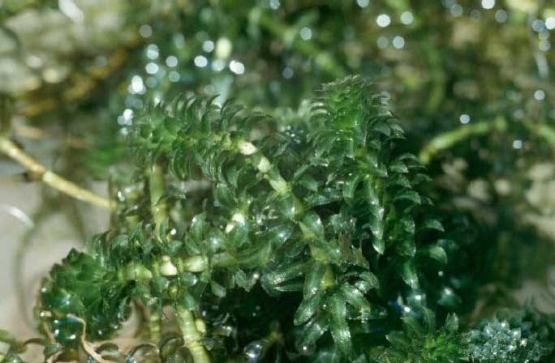

जल-जड़ीHydrilla
Hydrilla verticillata · Hydrocharitaceae · FLR-0092

- Scientific name
- Hydrilla verticillata (L. f.) Royle
- Family
- Hydrocharitaceae
- Hindi
- जल-जड़ी
- Status here
- invasive
- IUCN
- not evaluated
When to look कब देखें
Present all year.
जल-जड़ी / Hydrilla
Hydrilla verticillata (L. f.) Royle — Hydrocharitaceae
जल-जड़ी (हाइड्रिला / वॉटर थाइम / जलीय खरपतवार) — पूर्वी उत्तर प्रदेश के तालाबों, सिंचाई नहरों, और धीमी गति से बहने वाली नदियों के उथले पानी में पाया जाने वाला एक पूर्णतः जलमग्न, तेजी से फैलने वाला और आक्रामक जलीय खरपतवार (submerged invasive weed) है। यह मूल रूप से अफ्रीका का निवासी है, लेकिन अब भारत और विशेष रूप से उत्तर प्रदेश के जलीय निकायों में एक गंभीर समस्या बन चुका है। इसकी सबसे बड़ी पहचान इसके लंबे, पानी के नीचे तैरते हुए शाकीय तने हैं जिन पर 3 से 8 छोटे पत्तों के चक्र (whorls of 3–8 leaves at nodes) बने होते हैं। पत्तियों के किनारे आरी की तरह कांटेदार (toothed margins) होते हैं। यह खरपतवार पानी के नीचे इतने घने मखमली जाल (dense underwater mats) बना देता है कि यह सूर्य के प्रकाश को नीचे जाने से रोकता है, जिससे पानी का बहाव धीमा हो जाता है, मछली पकड़ने के जाल फंसते हैं, और जलीय जैव-विविधता नष्ट हो जाती है। इसके तने का एक छोटा सा टुकड़ा भी टूटकर नया पौधा बना लेता है, जिससे इसे तालाब से पूरी तरह हटाना अत्यंत कठिन (difficulty of manual removal) हो जाता है।
Quick Identification त्वरित पहचान
| Feature | Description |
|---|---|
| Plant habit | Submerged, heavily branched, rooting perennial aquatic herb, forming dense underwater columns up to 1–3 meters |
| Leaves | Arranged in whorls of 3 to 8 leaves at each stem node; leaflets are linear-lanceolate (6–15 mm) with sharp, microscopic teeth |
| Stem | Slender, cylindrical, round, bright green, easily fragmented into tiny growing pieces |
| Tubers | Produces small, yellowish, potato-like underground tubers (5–10 mm) at the root tips that survive dry periods in mud |
| Feel | The leaves feel rough and rasping when rubbed downward due to small spines on the central vein underside |
Field tip: Inspect an irrigation canal in August. Look down through the water for thick, green, brush-like mats filling the water volume. Pull a stem out; inspect the nodes. You will see whorls of 4 or 5 tiny, pointed green leaves with saw-like edges. If you run your finger down the leaf, it will feel rough.
Morphology आकारिकी
Biometrics (typical measurements of mature plants in the northern Indian plains):
| Measurement | Range |
|---|---|
| Stem length | 1.0–3.0 m |
| Leaf length | 6–15 mm |
| Leaf width | 1.5–3.0 mm |
| Whorl leaf count | 3–8 leaves/node |
| Tuber size | 5–10 mm |
| Turion (bud) size | 3–5 mm |
Stem and Roots: Stems are highly branched, rising to the water surface to spread horizontally. The roots are thin and bury into the bottom mud.
Foliage: Simple, sessile leaves. The central vein (midrib) has 1 or 2 small spines on the underside.
Reproduction:
- Vegetative: Stems break easily (fragmentation); each broken piece grows roots within days.
- Tubers & Turions: Produces underground tubers and winter buds (turions) in autumn that can remain dormant in dry pond mud for several years.
Associated Species / Interactions संबंधित प्रजातियाँ
- Habitat Smotherer: Like Water Hyacinth (FLR-0013), it forms solid underwater blocks that prevent sunlight from reaching native bottom plants, lowering dissolved oxygen levels at night and causing fish kills.
- Submerged shelter: Small fish fry and freshwater grass shrimp (Macrobrachium lamarrei) hide inside the mats to escape predatory catfish.
Pests and Diseases कीट और रोग
- Hydrilla Tuber Weevil: Bagous hydrillae is a tiny weevil whose larvae bore into the stems and destroy the underground tubers. It is used as a biological control agent.
- Hydrilla Leaf Miner Fly: Larvae mine the leaves, causing them to rot.
Traditional and Ethnobotanical Use पारंपरिक और नृवंशवनस्पति उपयोग
- Green Mulch Fertilizer: Cleaned and harvested in bulk from canals, the green mass is spread over winter crop beds (Rabi vegetables) as a moisture-retaining organic mulch.
- Fish Pond Compost: Decayed in compost pits with cow dung to make nutrient-rich pond compost, used to stimulate plankton growth in fish nurseries.
- Emergency Cattle Feed: During severe dry summer months when green grass is unavailable, it is pulled from deep pools and fed to water buffaloes, although it has low nutritional value.
- Aquarium Decoration: Cultivated in jars and home fish tanks as a natural oxygenator and decoration, although it must be managed to prevent escape into wild canals.
Expected Locally स्थानीय रूप से अपेक्षित
Not a field record. Written from published accounts for eastern Uttar Pradesh. No confirmed local sighting yet — if you have seen it, that is what the atlas needs.
अभी तक स्थानीय पुष्टि नहीं। यह विवरण प्रकाशित स्रोतों से है, किसी अवलोकन से नहीं।
A highly destructive invasive weed in all irrigation channels and managed ponds of the Basti district, regularly observed in the Harraiya, Vikramjot, and Basti blocks. Farmers complain that this "water net" (jal-bel) chokes irrigation flow from canals, and manually clearing the channels is a tedious task because any broken stem fragments left behind sprout back within a week.
Distribution वितरण
Global range: Native to warm temperate and tropical regions of Africa, Australia, and parts of Asia; introduced and highly invasive in North America, Europe, and India.
In India: Widespread in all states in slow-moving freshwaters and lakes.
In Uttar Pradesh: Abundant state-wide, particularly in slow-flowing canal-irrigated districts.
In Basti district / eastern UP: Widespread across all irrigated blocks.
Research Questions शोध प्रश्न
Anyone can investigate these | कोई भी इन प्रश्नों की जाँच कर सकता है
- How many days does a 10 cm fragment of Hydrilla stem take to produce roots when placed in a jar of pond water? — Record rooting rates.
- Does Hydrilla grow faster in stagnant pond water compared to running tap water? — Compare stem elongation rates.
- What is the number of potato-like tubers found in a 30 cm square area of pond bottom mud in winter? — Dig and count tubers.
- Does the addition of dry Hydrilla compost improve the growth of tomato plants in pots? — Conduct crop trial comparisons.
- How can you design a citizen science project to monitor and map the spread of Hydrilla in your local village ponds? / आप अपने स्थानीय गाँव के तालाबों में जल-जड़ी के प्रसार की निगरानी और मानचित्रण (Mapping) करने के लिए एक नागरिक विज्ञान परियोजना कैसे डिज़ाइन कर सकते हैं? — Propose a monitoring schedule and survey sheets for local children.
Similar Species मिलती-जुलती प्रजातियाँ
| Species | How to tell apart | comparison |
|---|---|---|
| Egeria / Brazilian Waterweed (Egeria densa) | Leaves are larger (20-30 mm), in whorls of 4-8; leaves are smooth (not rough/saw-toothed) | ब्राजीलियाई जल-जड़ी — बड़े चिकने पत्ते, कांटों का अभाव |
| Elodea / Waterweed (Elodea canadensis) | Leaves are in whorls of 3 (rarely more); leaves are shorter, blunt, smooth without rough teeth | एलोडिया — तीन पत्तियों के चक्र, कोमल बनावट |
| Coontail / Hornwort (Ceratophyllum demersum) | Leaves are deeply divided into needle-like forks, arranged in whorls; lacks true roots; feels stiff | सींग-पत्ती — सुई जैसे बंटे पत्ते, जड़ों का पूर्ण अभाव |
Field rule: Submerged green aquatic weed with slender branched stems, leaf whorls of 3 to 8 with sharply toothed margins, and small yellow-potato-like tubers in the bottom mud, is Hydrilla.
Taxonomy & Classification वर्गीकरण
Original description. Carl Linnaeus the Younger described this species as Serpicula verticillata in 1782 in his Supplementum Plantarum (p. 416). John Forbes Royle placed it in the genus Hydrilla in 1839 in his Illustrations of the Botany of the Himalayan Mountains (p. 376). The genus name Hydrilla is a diminutive of the Greek Hydra, the mythical multi-headed water serpent, referencing its branching stems. The specific name verticillata is Latin for whorled, referencing the leaf arrangement.
Subspecies. Monotypic — no subspecies are currently recognised.
Family and order placement. Placed in the order Alismatales, family Hydrocharitaceae (tape-grass family), subfamily Hydrilloideae.
Phylogenetic notes. Hydrilla verticillata is a highly specialized monocot adapted to a fully submerged lifecycle. It has evolved a highly efficient C4-like photosynthetic pathway under low-carbon water conditions and starch-rich underground tubers to survive winter freezing and summer drought.
IUCN status rationale. Not evaluated (NE) by the IUCN Red List. It has a highly secure, globally expanding invasive population.
Photo Gallery फोटो गैलरी
References संदर्भ
- Royle, J. F. (1839). Illustrations of the Botany of the Himalayan Mountains. W.H. Allen & Co., London, p. 376. [original generic transfer]
- Linnaeus filius, C. (1782). Supplementum Plantarum Systematis Vegetabilium. Braunschweig, p. 416. [original description as Serpicula verticillata]
- Brandis, D. (1906). Indian Trees (covers monocot family keys). Archibald Constable & Co., London.
- Langeland, K. A. (1996). Hydrilla verticillata (L.f.) Royle (Hydrocharitaceae), \"The Perfect Aquatic Weed\". Castanea (the definitive review on its invasiveness and physiology).
- World Flora Online (2024). Hydrilla verticillata taxon details.
- GBIF Occurrence Data — Hydrilla verticillata, India (2010–2025).
Source file: species/flora/aquatic/hydrilla.md